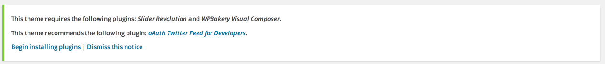
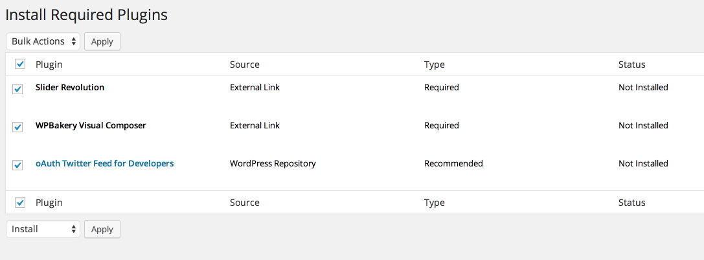
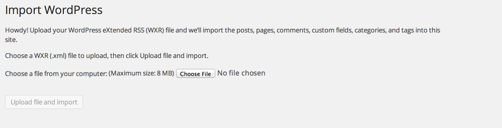
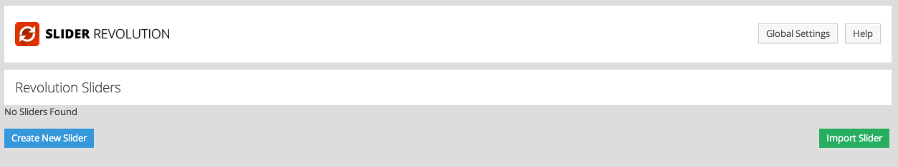
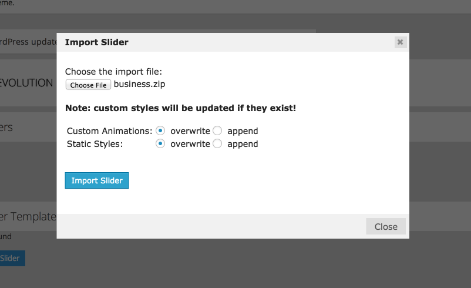
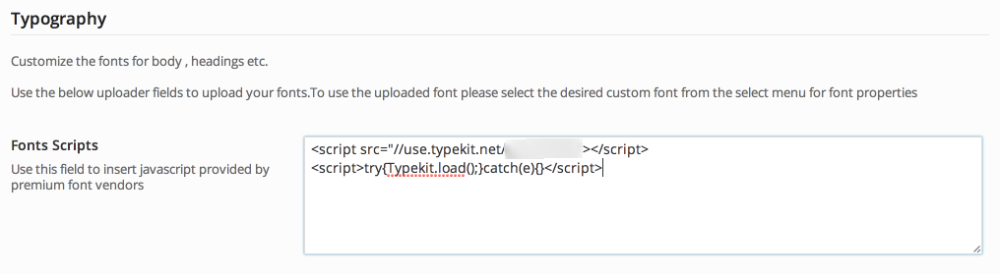
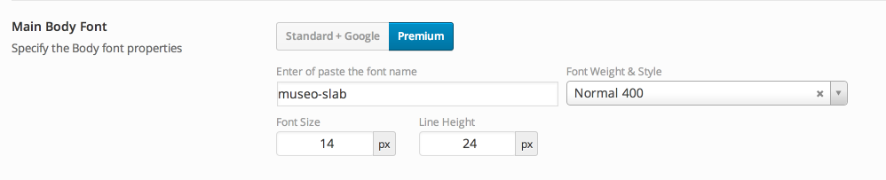
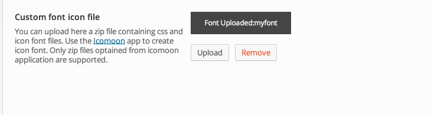
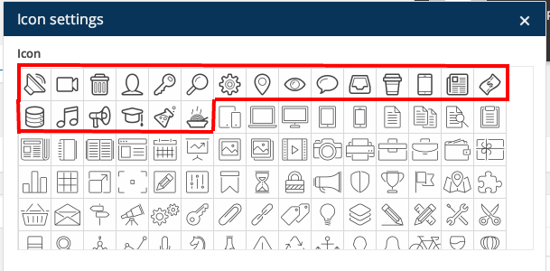

Thank you for purchasing my theme. If you have any questions that are beyond the scope of this help file, please feel free to open a new ticket at our support forum
Before beginning the installation and configuring of your new theme, you must have wordpress installed. If you need to install WordPress then please visit: http://wordpress.org/download/. If you need any help with the installation, please refer to this guide: http://codex.wordpress.org/Installing_WordPress.
Here is a brief step by step on how to install WordPress:
Once you have setup a copy of WordPress, there are two ways you can go about installing the theme:
We always add new fixes , features and improvements over time to our theme . There is no risk on losing your settings and pages. However if you had done modifictations on theme files, then they will be lost.
Aperio has included theme update system , to enable this go to Aperio Option -> Theme update and enter your themeforest username and api key. After that go to Wordpress -> Updates to check for new updates .
When you have successfully installed the theme , you will be asked to install the required plugins.

Then click on the begin installing plugins , choose the plugins you want to install or select all and then click install.

Both the theme content and theme options have been provided so that you can set up the theme to look exactly like the our demo in a few minutes. You can find the main demo XML file, i.e demo_data.xml in the demo data folder inside the main download zip folder. XML file is to use through the WordPress import tool, which can be found in Tools > Import > WordPress. Follow the steps to import the demo content and leave the final page to load with a confirmation that the content has been imported successfully (this may take some time).

Go to Wp Admin Menu -> Revolution Slider and find "import" button on this page and after that you will be asked to upload the zip file , now go to demodata folder in your main zip file downloaded from themeforest and then select the business.zip file and click import slider.


Theme panel gives you the abilty to upload your custom fonts ( .svg, .eot , .woff , .ttf Files ) for later use on typorgraphy Properties.
To upload an font simply navigate to Aperio Options > typography and upload the correct file for each font type.
Once you have upload the desired font you can use it on appropraite location . For example if you want to use custom font 1 for first heading just select the "Custom font 1" from the select menu as default font .
Insert the javascript or embed code provided by the premium fonts vendors in Typrography -> Fonts Scripts

and after that just click on premium button for desired font properties and insert the name of your font as follows:

We have included an custom font icon uploader with Aperio to easily upload your own icons . First of all you will need to generate icons zip file with icomoon application , that is available online for free (https://icomoon.io/app/).
Make sure that you have enabled the zip archive extension available for php , contact your host provider if zip archive extension in not avaialble or not enabled by default.
Then go to Aperio Options -> General -> Custom Font icon file and upload the zip file optianed from icomoon.

All the icon you have uploaded will now appear in iconpicker for available location in visual composer , visual shortcode editor and some other location.

Visual composer is an essential part of theme , visual composer developers have created an awesome documentation for vc , if you are unfamiliar with visual composer please read vc documentation and video to know how to use visual composer.
We have created several componets for visual composer , so watch the following video to create some stunning content using visual composer
We have included seven Different 6 custom Widgets with Aperio for more functionalty.
Flickr - This flickr widget shows off your flickr photos. just simply need to enter flickr id.
Video - The Video widget embeds a Resposnsive video from a url that you enter into the input field within the widget options.
Recent Posts - A custom widget to show recent posts with an image
Recent work - A custom widget to show recent projects with an image.
Advert Grid - A custom widget to show an advert grid of up to 4 125 x 125 adverts in a single block.
Twitter - A custom your latest tweet . To use this widget to you must need to enter twitter api key and token. Please Follow step 1 from the guide here to create your Twitter APP, and get the required keys/tokens –http://www.webdevdoor.com/php/authenticating-twitter-feed-timeline-oauth/
Aperio is 100% translation and multi-lingual ready, and we recommend that you use the very popular WPML plugin.
To translate the static strings, if you aren't using WPML then use PO Edit, from http://www.poedit.net/. Once you have installed please follow the steps below:
We have provided a child theme package ready for you to use if you wish to make changes to files, while keeping them through updates. The child theme is included within the main download folder, and is named "Aperio-child" all you need to do is upload this as well as the standard "Aperio" folder, and then activate the child theme in Appearance > Themes from the WordPress menu.